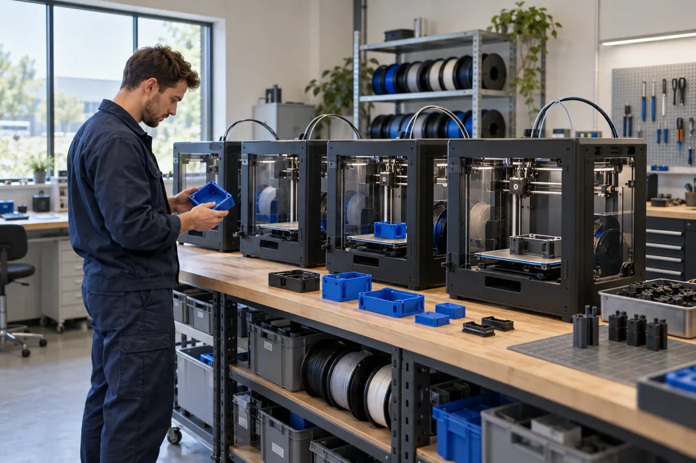

Upload your design
Start with STL, STEP, OBJ or 3MF. Add your part’s purpose and any dimensions that matter.
Explore the processProtoForge brings digital design, additive manufacturing and practical engineering together, from a first concept to a finished custom part.

We help engineers, designers and creators understand how a part will be made, which material fits the job and what to review before production.
Our mission is to make professional prototyping approachable. Our vision is a development process where people can test physical ideas early and manufacture only what they need.

Illustrative process imagery; these images are not a photographic record of a verified ProtoForge facility.
Start with STL, STEP, OBJ or 3MF. Add your part’s purpose and any dimensions that matter.
Explore the processCheck wall thickness, geometry, orientation and support requirements with an engineering review.
Explore the processBalance strength, flexibility, surface finish and budget against the intended use.
Explore the processSpecify raw, sanded or painted surfaces and how many parts you need. Finish availability depends on the process.
Explore the processBuild the part, remove supports or powder, and apply the agreed finishing steps.
Explore the processReview dimensions, surface condition and material against the agreed requirements.
Explore the processBuild durable and cost-effective parts layer by layer using thermoplastic filament. A versatile choice for functional geometry.
Explore serviceCure liquid resin into detailed parts with smooth surfaces. Make small features and presentation models easier to evaluate.
Explore serviceFuse nylon powder into complex shapes. Surrounding powder supports the part, opening up interlocking and internal geometry.
Explore serviceThe original project’s demonstration timeline is retained below. Dates and milestones await business verification.
The roles that support a project, from initial review through delivery.
From a single prototype to your next production run.